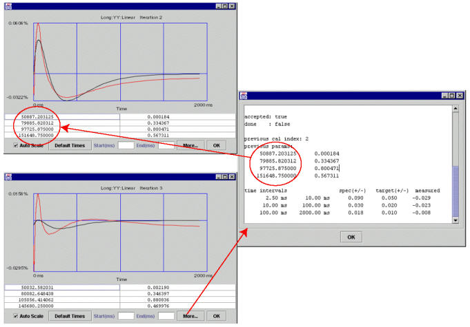
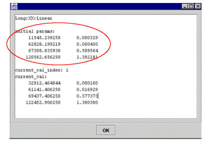
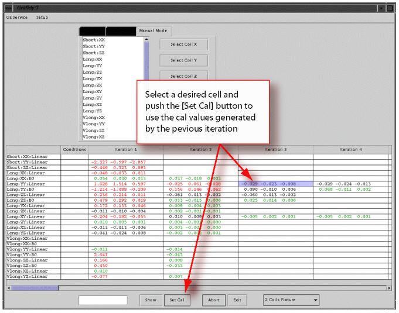

Operating Documentation
Direction 5133315-3, Rev# 14
Signa EXCITE HD 1.5T Service Methods
Module Version 1.0, Version Date 5/3/07
Operating Documentation |
To explain the relationship of iterations to calibration values, refer to Illustration 1.
Illustration 1: Scan Iteration Relationships

The circled cal values above were generated by the second iteration (by fitting the second iteration measured curve into the set of cal values --tau/alpha’s or time constan/amplitudes). If accepted (as is the case here), these cal values went into the cal files (grafidy(x/y/z).cal, gram_tune.dat, ecccoeff.dat) and hardware (pre-emphasis) to compensate eddy current for the next iteration (third iteration in this example).
The measurement of the third iteration is based on the compensation of the cal values “dialed in” at the end of the second iteration. Clicking the [More] button (of the third iteration pop-up) will show the cal values (“previous parameters”) used in the hardware/pre-emphasis when the third iteration was scanned. The “previous cal index” of 2 in this example shows that the cal values used were generated by the second iteration.
There may be times when selecting the cal values from the previous iterations may be desirable. Section 1 and Section 2 describe each way.
Illustration 2: Using Cal Values Generated by a Given Iteration

Refer to Illustration 2.
Using the method shown in Illustration 2 will load the cal values (to cal files and hardware) generated by the iteration selected (third iteration in this example).
When to use: if you did not accept the cal values generated from an iteration (in particular, the last iteration) or accepted the cal values (but further iteration overwrote them), you can move back and use the values of a previous iteration by selecting the iteration you want and click[Use Post]. At that point, the cal values generated from the selected iteration will be put back into cal files and hardware.
If a component/cell in the column “conditions” is selected, and the menu item Use Post-Fit Cal Parameters for Selected Cell is selected, then the initial cal values (before any scan for the component to modify them) will be put back into the cal file.
Illustration 3, a pop-up from a previous section is duplicated to show the initial cal values (initial params) before the menu item Use Post-Fit Cal Parameters for Selected Cell is selected. Those initial cal values will be put into the cal file by this selection.
Illustration 3: Initial Cal Values

After the selection and re-popup (by clicking the [Show] button, assuming the cell selection in the “Conditions” column has not changed), you'll see that the initial parameters have not changed, but the current cal index has changed to 0, and current_cal are the same as initial parameters.
If a cell with a short TC (short xx, yy, zz linear) in the “Conditions” column is selected and then the menu item Use Default Short Cal Params is selected, the tool will load the default short cal values for the selected component (short xx linear, for example) into the cal file. It has the same effect as 5.3.6, except it is on a component-by-component basis here (if you want to load all xx, yy, zz shorts, do this 3 times on the 3 cells), rather then one pressing one button (“Yes”) to load default values for all short TC components as in 5.3.6.
Using the method shown in Illustration 4 will load to the cal values (to calibration files and hardware) used during scan of selected iteration (third iteration in this example), which was generated during the previous iteration (second iteration in this example) as the result of fitting measured curve with these cal values, and these cal values were downloaded to the hardware at the end of the previous iteration.
Illustration 4: Using Cal Values from a Previous Iteration

When to use: If the further iteration produced worse EC results than the previous iteration and you wish to go back to the cal values that produced the better EC results (of the selected iteration).